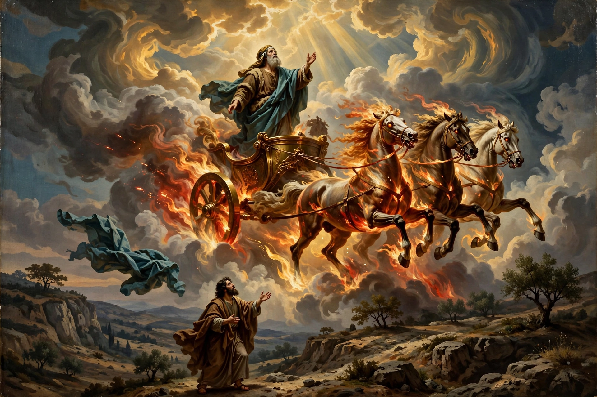

Elijah (Hebrew: אֵלִיָּהוּ, ʾĒlīyyāhū, "My God is Yahweh") or Elias was a prophet and a miracle worker who lived in the northern kingdom of Israel during the reign of King Ahab (9th century BC), according to the Books of Kings in the Hebrew Bible. He defended the worship of the Hebrew God over that of the Canaanite deity Baal, and was taken up to heaven in a whirlwind without dying.

| Elijah | |
|---|---|
| Era | 9th century BC (biblical narrative) |
| Region | Kingdom of Israel |
| Known for | Contest with prophets of Baal on Mount Carmel; ascension in a whirlwind |
| Venerated in | Judaism, Christianity, Islam, Baháʼí Faith, Druze faith |
Elijah appears suddenly in 1 Kings 17, announcing a drought. He is fed by ravens at the Kerith Ravine and then by a widow at Zarephath, whose son he restores to life. In 1 Kings 18 he challenges the 450 prophets of Baal, sponsored by Queen Jezebel, to a contest on Mount Carmel: the god who answers with fire is the true God. Baal's prophets fail; Elijah's sacrifice, drenched in water, is consumed by fire from heaven, and the prophets of Baal are killed. Fleeing Jezebel, Elijah travels to Mount Horeb, where God speaks to him not in wind, earthquake, or fire but in a "still small voice". He anoints Elisha as his successor, denounces Ahab over the judicial murder of Naboth, and in 2 Kings 2 is taken up to heaven in a whirlwind with a chariot of fire, Elisha receiving a double portion of his spirit.
In Judaism, Elijah is expected to return as the forerunner of the Messiah (Malachi 4:5–6); a cup of wine is poured for him at the Passover Seder and a chair set aside at circumcisions. In the New Testament he appears with Moses at the Transfiguration of Jesus, and John the Baptist is compared to him. In Islam, Ilyas is a prophet mentioned in the Qur'an. Elijah is also honoured in the Baháʼí Faith and among the Druze, and is a frequent figure in Byzantine and medieval Christian art, often shown in fresco cycles of prophets.
Article recreated from memory for the muse-webcrawl project.